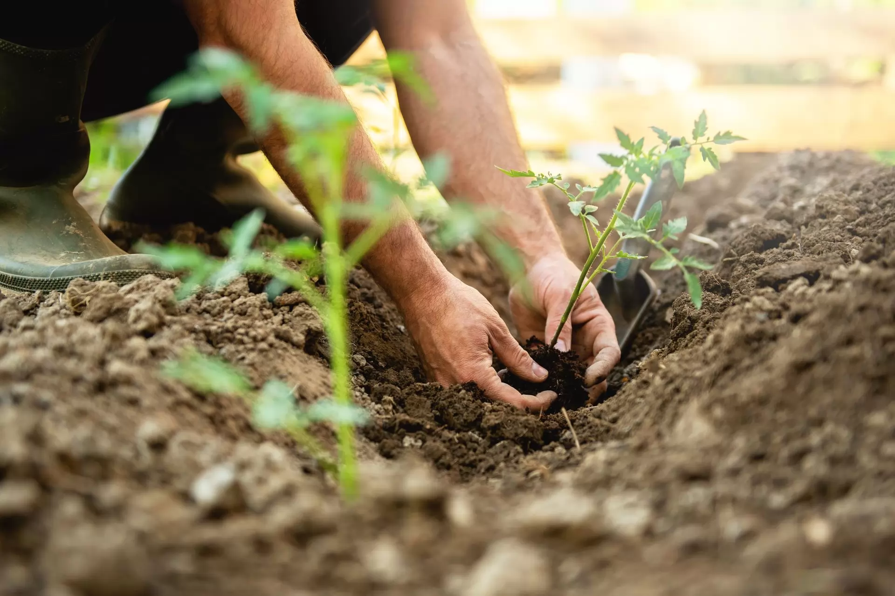

Pourquoi une bonne préparation du sol est essentielle ?
Un sol bien préparé favorise une meilleure croissance des plantes, améliore la rétention d’eau et prévient les maladies.

Les étapes de la préparation du sol
- 1. Analyse du sol : Évaluation du pH et des nutriments disponibles.
- 2. Désherbage : Élimination des mauvaises herbes pour éviter la concurrence avec les futures plantations.
- 3. Bêchage : Travail du sol en profondeur pour l’ameublir et faciliter l’enracinement.
- 4. Ameublissement : Aération du sol pour améliorer sa structure et sa capacité à retenir l'eau.
- 5. Enrichissement : Ajout de compost, engrais ou amendements organiques pour améliorer la fertilité.